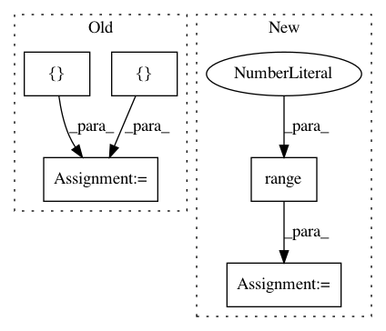

48084d8851f801b5b2f550708cecf67b63eb92a8,src/sdk/pynni/tests/test_compressor.py,,,#,58
Before Change
return test_tf2_func
k1 = [[1] * 3] * 3
k2 = [[2] * 3] * 3
k3 = [[3] * 3] * 3
k4 = [[4] * 3] * 3
k5 = [[5] * 3] * 3
w = [[k1, k2, k3, k4, k5]] * 10
class CompressorTestCase(TestCase):
def test_torch_level_pruner(self):
After Change
return test_tf2_func
// for fpgm filter pruner test
w = np.array([[[[i+1]*3]*3]*5 for i in range(10)])
class CompressorTestCase(TestCase):
In pattern: SUPERPATTERN
Frequency: 3
Non-data size: 5
Instances
Project Name: microsoft/nni
Commit Name: 48084d8851f801b5b2f550708cecf67b63eb92a8
Time: 2019-11-24
Author: 38930155+chicm-ms@users.noreply.github.com
File Name: src/sdk/pynni/tests/test_compressor.py
Class Name:
Method Name:
Project Name: GPflow/GPflow
Commit Name: 55d342a0d0e44f3420877a8e9452adba7933ae72
Time: 2019-04-11
Author: art.art.v@gmail.com
File Name: gpflow/conditionals/util.py
Class Name:
Method Name: base_conditional
Project Name: keras-team/keras
Commit Name: a18932cb658c012808dd78bbd7f5bf1fe712e6c9
Time: 2016-01-15
Author: francois.chollet@gmail.com
File Name: examples/neural_style_transfer.py
Class Name:
Method Name: